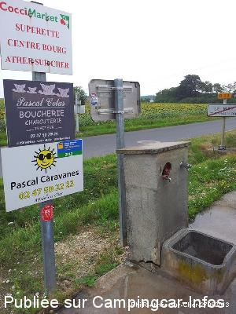
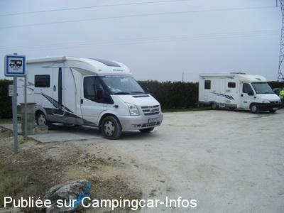
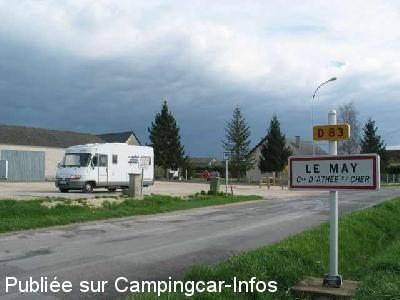
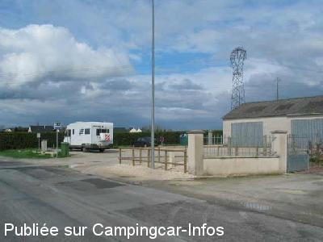

ASN = Aire de services avec stationnement nuit possible de :
ATHÉE SUR CHER
(N° 729)
Accès/adresse :
Rue de Cigogne, D83
Le May
37270 ATHÉE SUR CHER
Le May
37270 ATHÉE SUR CHER
Latitude : (Nord) 47.31417° Décimaux ou 47° 18′ 51′′
Longitude : (Est) 0.9175° Décimaux ou 0° 55′ 2′′
Tarif : Gratuit
Type de borne : Artisanale
Services :


Minimarket proche
Autres informations :
Ouverte toute l'année
4 emplacements
Terre battue, éclairée, légèrement en pente
Eau coupée en hiver .

Le 01/09/2013 par philr

Le 23/02/2009 par Xtian74

Le 01/05/2005 par nomade59

Le 01/05/2005 par nomade59
de
popole
le 30/11/2012 :
De passage le 28 novembre 2012, plus que parfait, de la graine à prendre pour les grandes cités touristiques qui n'ont rien ou presque rien.
Il y a même un réparateur de caravanes et CCars sur cette commune et l'eau ce jour n'était pas coupée.
De passage le 28 novembre 2012, plus que parfait, de la graine à prendre pour les grandes cités touristiques qui n'ont rien ou presque rien.
Il y a même un réparateur de caravanes et CCars sur cette commune et l'eau ce jour n'était pas coupée.
de
philr
le 04/11/2012 :
Passage 04/11/2012.
BRAVO et MERCISSSSS !
C'est tout ce qui me vient après avoir cherché et trouvé "bornes closes" ailleurs, en général là où il faut payer et collé à un camping fermé "hors saison". Nous avons profiter des commerçants.
Autre borne ouverte : Villaines les Rochers, petite citée rustique de la vannerie.
Passage 04/11/2012.
BRAVO et MERCISSSSS !
C'est tout ce qui me vient après avoir cherché et trouvé "bornes closes" ailleurs, en général là où il faut payer et collé à un camping fermé "hors saison". Nous avons profiter des commerçants.
Autre borne ouverte : Villaines les Rochers, petite citée rustique de la vannerie.
de
herderien
le 23/09/2011 :
je confirme ce que "louloutte"; bravo à travers cette petite commune ,à tous ces petits villages qui se défoncent pour nous accueillir car ils ont besoin de voir du monde et se distinguent donc des grands sites touristiques qui ne sont que de grands centres commerciaux attrapes-touristes .Quand on voit l'imagination et les sommes dépensées par certaines communes pour installer des panneaux d'interdiction ou des barres à 2 mètres ;ça leur coûterait moins cher d'installer une borne artisanale : quand est-ce que les fabricants de c.c. vont se préoccuper de la question auprès du ministre du tourisme ?
je confirme ce que "louloutte"; bravo à travers cette petite commune ,à tous ces petits villages qui se défoncent pour nous accueillir car ils ont besoin de voir du monde et se distinguent donc des grands sites touristiques qui ne sont que de grands centres commerciaux attrapes-touristes .Quand on voit l'imagination et les sommes dépensées par certaines communes pour installer des panneaux d'interdiction ou des barres à 2 mètres ;ça leur coûterait moins cher d'installer une borne artisanale : quand est-ce que les fabricants de c.c. vont se préoccuper de la question auprès du ministre du tourisme ?
de
louloutte
le 06/04/2011 :
eh bien nous nous tenons a remercier la municipalité pour cette jolie petite aire mise a notre disposition dans un si petit village, car mieux servis que dans les grandes villes ou nous n' avons rien trouvé d' ouvert pour faire le pplein d' eau et les vidanges,
nous nous dirigons sur TOURS et là non plus pas d' aire de CC de répertorié sur GPS ou sur livre des aires de service
si toutes les villes prenaient modèle sur ce petit village qui posséde une superette, un boulanger,un coiffeur etcccc, BRAVO ++++ et encore merci M le maire et ses conseillers
je reviens sur cette magnifique petite aire gratuite, nous avons passé une super bonne nuit , très calme,
nous recommandons vivement ce charmant petit village
encore merci
eh bien nous nous tenons a remercier la municipalité pour cette jolie petite aire mise a notre disposition dans un si petit village, car mieux servis que dans les grandes villes ou nous n' avons rien trouvé d' ouvert pour faire le pplein d' eau et les vidanges,
nous nous dirigons sur TOURS et là non plus pas d' aire de CC de répertorié sur GPS ou sur livre des aires de service
si toutes les villes prenaient modèle sur ce petit village qui posséde une superette, un boulanger,un coiffeur etcccc, BRAVO ++++ et encore merci M le maire et ses conseillers
je reviens sur cette magnifique petite aire gratuite, nous avons passé une super bonne nuit , très calme,
nous recommandons vivement ce charmant petit village
encore merci
de
Xtian74
le 27/02/2011 :
Passage le 26/02/2011. Nuit tranquille avec une autre CC sur cette petite aire. L'eau était coupée à mon passage.
Passage le 26/02/2011. Nuit tranquille avec une autre CC sur cette petite aire. L'eau était coupée à mon passage.
de
BAILA
le 04/09/2008 :
Petite aire pour 4 camping-cars s'ils se rangent correctement, sans prétention, calme. Aire de services facilement accessible et très propre, aucun commerçant alentours.
Petite aire pour 4 camping-cars s'ils se rangent correctement, sans prétention, calme. Aire de services facilement accessible et très propre, aucun commerçant alentours.
de
R. Villars
le 13/05/2008 :
De passage en journée pour déjeuner, nous remercions la municipalité pour l'accueil qu'elle offre aux camping-caristes sur cette aire très propre et calme, où les services sont gratuits.
De passage en journée pour déjeuner, nous remercions la municipalité pour l'accueil qu'elle offre aux camping-caristes sur cette aire très propre et calme, où les services sont gratuits.
de
cedetjuju508
le 15/04/2006 :
Aire toujours propre et en parfait état de fonctionnement.
Aire toujours propre et en parfait état de fonctionnement.